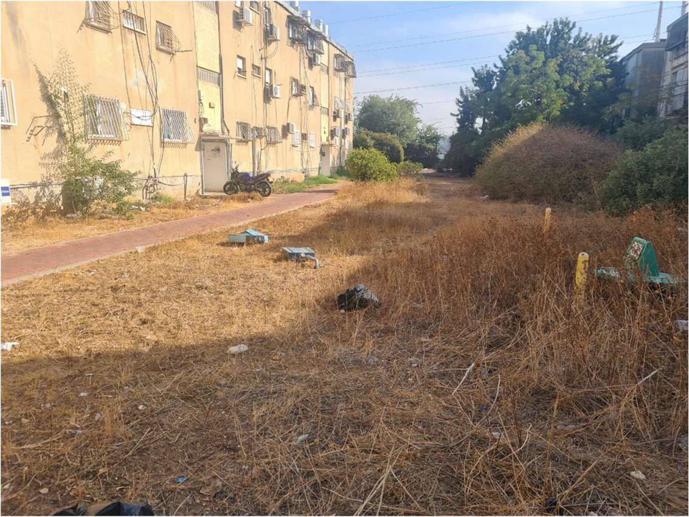
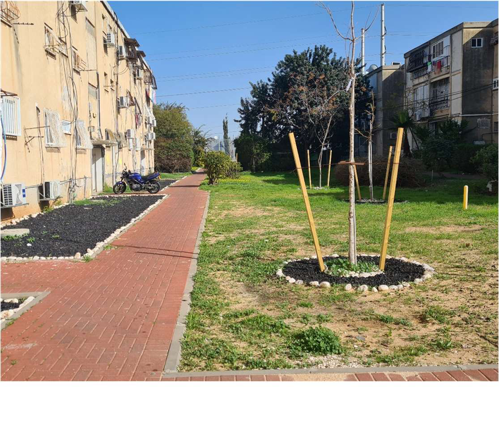
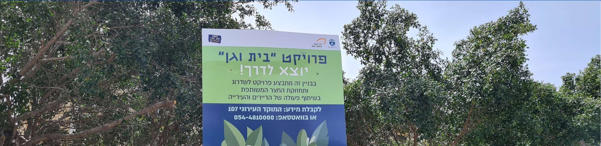

קבלת החלטות מבוססת נתונים
מגיעים לפתרון
בונים מצגת עם AI
מציגים לפורום
הגדרתם בעיה. עבדתם עם הנתונים. היום — מגיעים לפתרון.
שאלה משולחן העבודה
כל אחד הגדיר בעיה, אתגר או שאלה שהוא רוצה להתעסק בה.
עבדנו עם הנתונים
קובץ אמיתי, ניתוח עם AI ובדיקה ביקורתית — עד לתובנה.
פתרון — ומציגים אותו
מגיעים לפתרון, בונים מצגת ומציגים אותה לפורום.
מה נעשה היום
מגיעים לפתרון
גוגל שיטס
כלים למצגת
Canvas · NotebookLM · Gamma — ותמונות.
מציגים
שיר וסיכום
מגיעים לפתרון
מהבעיה שהגדרתם — להצעה קונקרטית שאפשר להראות.
התובנה אומרת מה לעשות. הפתרון מראה איך.
הכיוון
במשפט אחד — מה משנים, ולמי.
מה הוא עושה
הצעד הקונקרטי שסוגר את הפער בין הרצוי למצוי.
גרסה ראשונה
משהו מוחשי שאפשר להראות ולבחון.
פרוטוטייפ (פיילוט) Prototype
גרסה ראשונית, מהירה וזולה של הפתרון — שנועדה ללמוד ולתקשר, לא להרשים.
מה זה לא
מוצר מוגמר · מושלם · שנבנה חודשים · שאסור שיישבר.
מה זה כן
מהיר · "מספיק טוב" · נבנה בשעות · נועד לאסוף משוב.
שלוש רמות של פרוטוטייפ (פיילוט)
סקיצה על נייר
דקות. רואים אם הרעיון מובן.
מסך לחיץ
שעה. רואים איך התושב עובר בו.
אתר או אפליקציה חיה
כמה שעות, ב‑Gemini Canvas.
ג'יימס דייסון — הכישלון שהצליח
במשך כ‑15 שנה בנה גרסה אחר גרסה של שואב אבק בלי שקית.
מהדגם הראשון — עד היום
DC01
1993הדגם הראשון בלי שקית.
DC07
2001דור משופר, על בסיס הלמידה.
דגם עדכני
היוםאלחוטי — עוד צעד באותה דרך.
פיילוט — מודל בר‑קיימא לתחזוקת שפ"פ

לפנישטח ציבורי מוזנח — עשבייה יבשה ופסולת.

אחרישביל, נטיעות ותחזוקה משותפת של הדיירים והעירייה.
הפתרון כלל את התושבים — לא רק את התשתית

ארבעה עקרונות לפתרון טוב
מתחילים קטן
פיילוט בשכונה אחת עדיף על תוכנית לכל העיר.
משתמש אחד ברור
למי בדיוק זה פותר? דמות אחת, לא "כל התושבים".
נשארים קונקרטיים
"מה בדיוק קורה" — לא כותרות מופשטות.
בודקים מול מדד ההצלחה
תפוקה, תוצאה או השפעה — מה שהגדרתם ביום 1.
עובדים בכלי הפתרון — שלב אחר שלב
מפתחים את הפתרון
מנתחים את האקסל בגוגל שיטס
פותחים את הקובץ בגיליון של Google — ו‑Gemini עובד איתכם בתוכו.
פותחים את קובץ האקסל בגוגל שיטס
שלוש דרכים לעבוד עם AI בגוגל שיטס
מה מבקשים מחלונית Gemini
1 · להכיר את הנתונים
2 · לשאול שאלה
3 · טבלת ציר
4 · גרף למצגת
ארבעה דברים בכל בקשה לנוסחה
D:D,"<="&DATE(2025,12,31))
מנקים את הגיליון לפני שמנתחים
שמות בכמה כתיבים
תאריכים משובשים
מהקובץ — למספר שנכנס למצגת
בקשות נוספות שחוסכות שעות
השוואה לשנה קודמת
סימון חריגים
פניות לפי חודש
הסבר נוסחה
בודקים לפני שסומכים על המספר
רק מותמם
ל‑Drive עולה רק קובץ מותמם. לצ'אט — רק כותרות ושורת דוגמה.
בודקים על 3 שורות
שורות שאתם יודעים מה התשובה שלהן. יצא אחרת? הנוסחה שגויה.
מבינים את הנוסחה
נוסחה שלא הבנתם — לא נכנסת למצגת. מבקשים הסבר.
הקובץ שלכם בגוגל שיטס או בתוך האקסל
בונים מצגת עם AI
שלושה כלים להפוך את הפתרון למצגת — ותמונות שמחיות אותה.
שלושה כלים לבניית המצגת
מתארים במילים — ומקבלים מצגת חיה
ממלאים נתונים — ומקבלים פרומפט

כותבים פרומפט — ובונים מצגת
Notebook מכינה מצגת או סרטון — מהמקורות שלכם
מטקסט — למצגת מעוצבת בדקות
בונים מצגת ב‑Gamma
עורכים, מחליפים תמונות — ומייצאים
יוצרים תמונות רלוונטיות ב‑Gemini
ארבעה דברים שעושים את ההבדל
תמונה אמיתית
הצילום שהבאתם מהשטח — לא איור גנרי.
מסר אחד בשקופית
מוחקים כל מה שלא משרת את המסר.
צבע ופונט אחידים
צבע מוביל אחד ופונט אחד.
מנקים רעש
פחות טקסט, יותר רווח — העין נחה.
בונים את המצגת
שולחים לי את המצגת


הפסקת צהריים
אחרי ההפסקה — כל אחד מציג את הפתרון שלו, 5 דקות.
מציגים את המצגות
5 דקות לכל אחד. לא גרסה סופית — מתאמנים להציג.
סיפור נכון — ב‑5 דקות
עמידה והצגה נכונה
עמידה יציבה
רגליים ברוחב הכתפיים. לא מתנדנדים, לא מסתובבים למסך.
קשר עין
מדברים לאנשים — לא לשקופית. עוברים מאדם לאדם.
קצב ועצירות
לאט מהרגיל. שתיקה אחרי מספר חזק.
ידיים פתוחות
מחוץ לכיסים. תנועה שמלווה את המילים.
לא מקריאים
השקופית תומכת — אתם מספרים.
פתיחה וסיום חזקים
משפט ראשון שמושך. משפט אחרון — הבקשה.
הצגה — ואז שאלות ומשוב
הבמה שלכם
כמאזינים, שאלו את עצמכם בכל הצגה:
הבעיה ברורה?
והוכיחו שהיא באמת קיימת?
הפתרון משכנע?
קונקרטי ומחובר לבעיה?
הייתם אומרים "כן"?
לבקשה שהם הציגו?
סיכום ושיר לסיום 😊
שלושה מפגשים — ושיר אחד שנכתוב יחד.
כותבים מילים — ומנקדים בנקדן

מפיקים את השיר ב‑Suno
השיר של הקבוצה
שלושה מפגשים — בשלוש דקות.

מה עשינו בשלושת הימים
הגדרנו את הבעיה
עבדנו עם הנתונים
הגענו לפתרון והצגנו
מבעיה — לנתונים — לפתרון. זה התהליך לכל אתגר עתידי ברשות.
תודה
על שלושה מפגשים של פתיחות, סקרנות ועבודה אמיתית. עכשיו — ליישם בשטח.